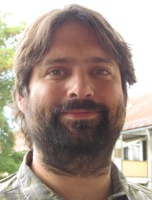
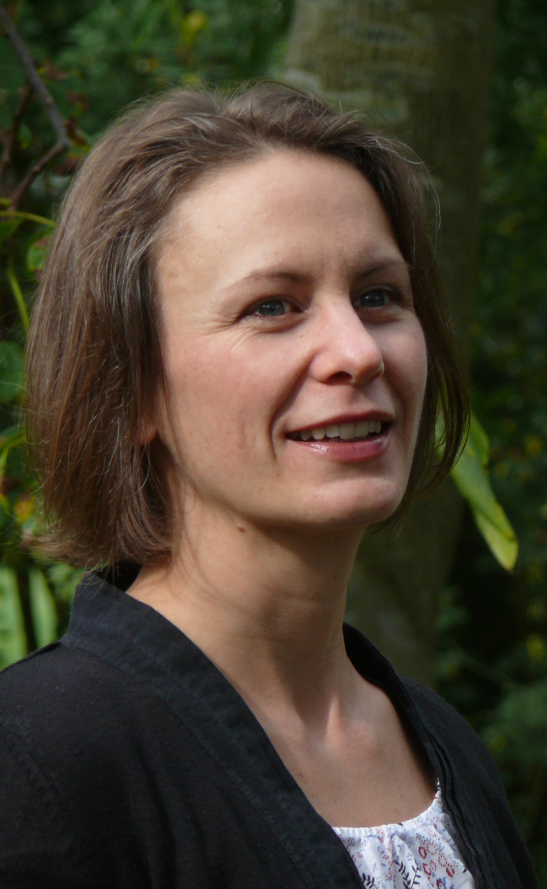
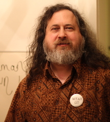
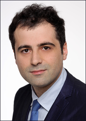

About us
Über uns
À propos
Chi siamo
Quiénes somos
Dr. Christian Grothoff
GNU maintainer. Network security & privacy researcher. Software architect.
GNU maintainer. Forscht zu Netzwerksicherheit & Privatsphäre. Softwarearchitect.
Mégalomane local, C'est à dire, qui voudrait créer un nouveau système de paiement et un nouvel Internet ?
Megalomane locale. Intendo, chi creerebbe un nuovo sistema di pagamento e una nuova Internet?
Megalómano local. Es decir, ¿quién querría crear un nuevo sistema de pagos y un nuevo Internet?
Dr. Nana Karlstetter
Sustainable business development.
Des Grundes wegen
Basse fréquence
Realizzando pensieri profondi
Concretando pensamiento profundo
Leon Schumacher
Entrepreneur, Investor, Fortune 100 CIO, IT company director in different industries, ….
Dr. Jeffrey Burdges
Applied cryptography. Contact to W3c & Tor.
Matematico
Mathematiker
mathématicien
Matemático
Dr. Cristina Onete

Theoretical foundations.
Theoretisch tötlich
Fatale (en théorie)
Teoricamente mortale
Teóricamente mortal
Dr. Richard M. Stallman
Founder of the GNU project. Ethical guidance and licensing.
Begründer des GNU Projektes. Ethikberatung und Lizenzrecht.
Enthousiaste Ethique
Entusiasta di etica
Entusiasta de la ética
Sree Harsha Totakura
PhD Student, TU Munich. Currently teaching.
Doktorand, TU München. Hält Vorlesung.
Principalement inoffensif
Principalmente inoffensivo
Mayormente inofensivo
Marcello Stanisci
Software engineer.
Benedikt Müller
Software engineer. Works on libebics.
EBICS.
EBICS.
EBICS.
EBICS.
Oliver Broome
Software engineer. Works on Android wallet.
Android Geldbörse
Gabor Toth
Software engineer.
Greta Breveglieri
Translator (Italian)
Traduttrici
Übersetzer
Traductrice
Traductoras
Ylenia Baldanza
Translator (Italian)
Traduttrici
Übersetzer
Traductrice
Traductoras
Julian Kirsch
PhD student, TU Munich. Currently teaching.
Doktorand, TU München. Currently teaching.
Pirate Linux, FreeBSD, sites Web et en état profond de détente.
Hackera Linux, FreeBSD, siti web e il deep state nel tempo libero.
Hackea Linux, FreeBSD, sitios web y el gobierno en las sombras, en su tiempo libre.